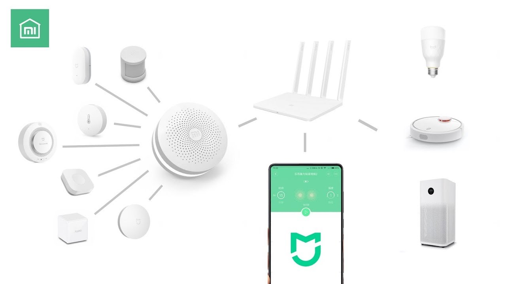

米家 (Mijia)
Semua Perangkat Dalam Satu Genggaman
Apa itu Mijia Mi Home?
Mi Home ini yaitu aplikasi resmi dari Xiaomi untuk memudahkan Anda mengelola produk Xiaomi dengan cara termudah dan ternyaman. Anda dapat mengonfigurasi atau memprogram lampu, penyedot debu, smartwatch, jam alarm, kipas angin, kamera keamanan dan sebagainya. Xiaomi menawarkan banyak sekali produk untuk Anda.
Ada banyak sekali produk² yang bisa dikoneksikan dengan mi home.
- Buka Aplikasi Mi Home
- Login dengan Mi Account
Maka Tampilannya akan seperti ini


Contoh perangkat Mi Home
Mi Smart Sensor dan Mi Home Security Camera Basic 1080p

Mi Smart Sensor Set ini berfungsi dengan berbagai perangkat pintar dan menyediakan berbagai pengaturan dengan kontrol otomatis, seperti satu klik untuk memadamkan semua perangkat pintar atau menghidupkan lampu pintar ketika membuka pintu, semua dapat dengan mudah dikontrol melalui aplikasi Mi Home. Mi Home Security Camera Basic merupakan perangkat pintar yang dapat mendeteksi pergerakan dan menghasilkan gambar yang jelas. Kamera keamanan dengan resolusi 1080p FHD, memiliki jangkauan lebih luas 130 derajat sudut lensa ultra lebar yang dapat melindungi segala aspek rumah, juga dapat berkomunikasi suara dua arah, mendeteksi setiap gerakan pada malam hari dengan inframerah hingga jarak 10 meter, dan terhubung dengan aplikasi Mi Home yang membuat penggunanya dapat dengan mudah mengakses dan memonitor keadaan rumah. Mendukung memori tambahan hingga 64GB yang dapat merekam setiap gerakan hingga 7 hari, mendukung wifi 2,4GHz dan 5GHz yang disesuaikan dengan router Anda.
Keyboard Interaction
Powered by bespoke-keys
Touch Interaction
Powered by bespoke-touch
Responsive Slides
Powered by bespoke-scale
Bullet List
Powered by bespoke-bullets
- Bullet 1
- Bullet 2
- Bullet 3
Syntax Highlighting
Powered by Lea Verou's Prism
(function() {
function hanoi(n, a, b, c) {
return n ? hanoi(n - 1, a, c, b)
.concat([[a, b]])
.concat(hanoi(n - 1, c, b, a)) : [];
}
return hanoi(3, 'left', 'right', 'mid')
.map(function(d) {
return d[0] + ' -> ' + d[1];
});
})();Named Route
Powered by bespoke-hash
Look up! This route has been named with a data-bespoke-hash attribute.
Just the beginning…
- Edit HTML markup in src/index.html
- Edit Stylus styles in src/styles/user.styl
- Edit JavaScript in src/scripts/main.js
- Enjoy! :) -@markdalgleish